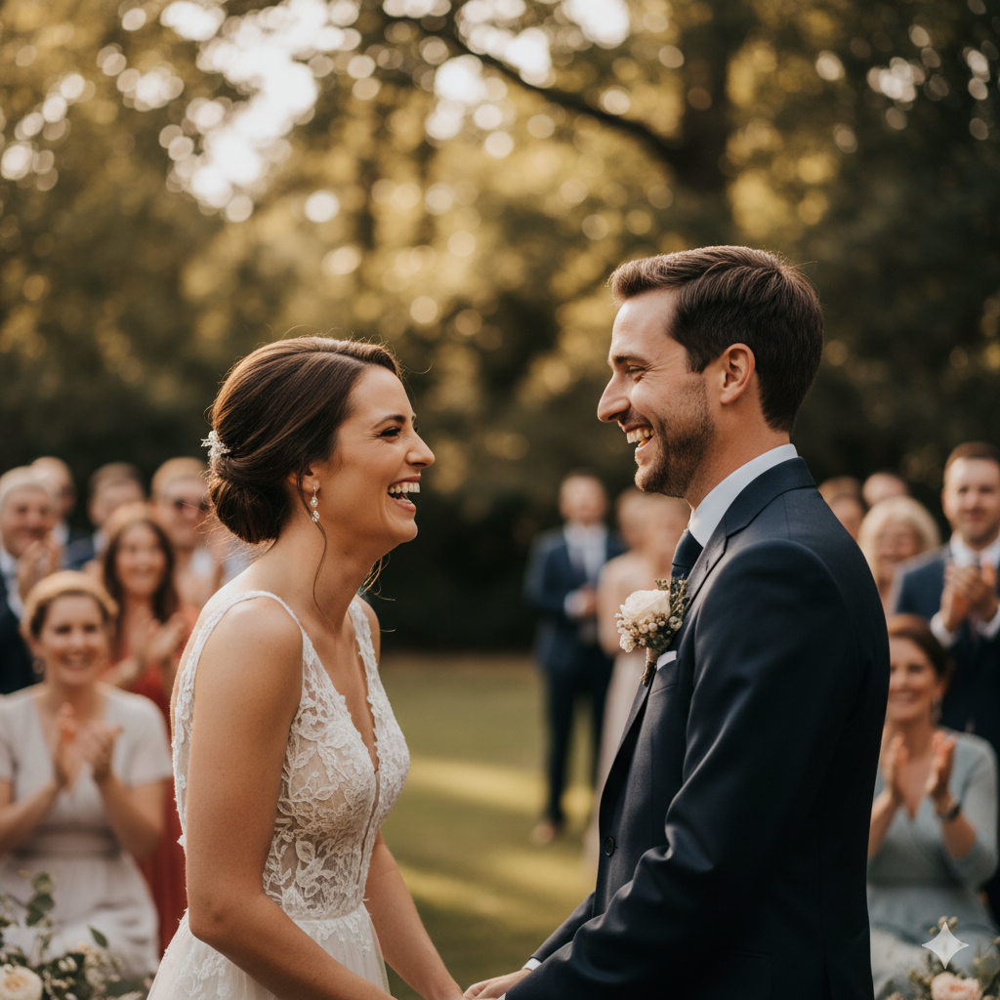
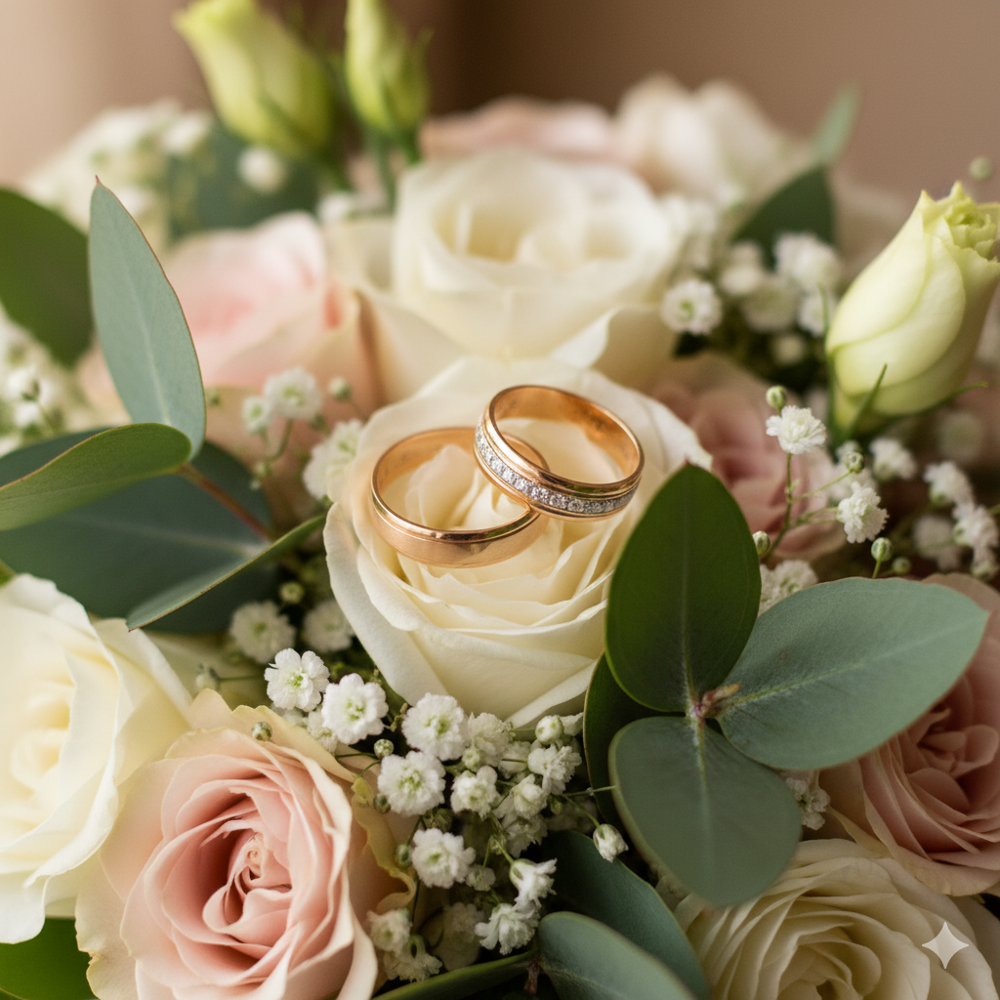
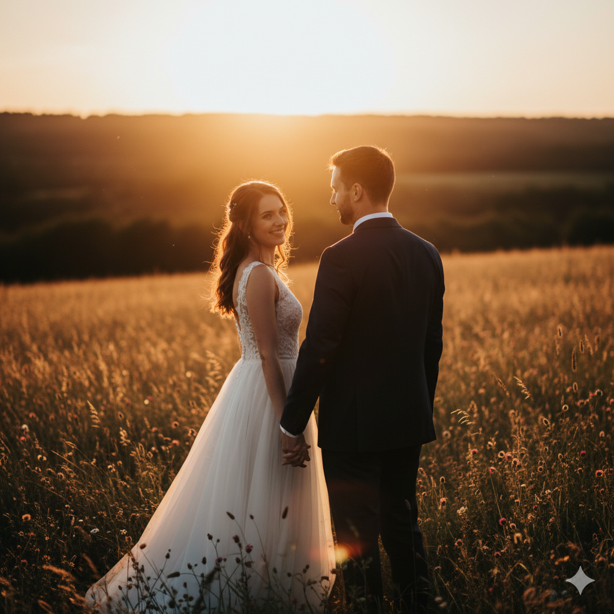

Fotografia
Olhar Artístico Fotografia
Piracicaba, SP
Sobre o Estúdio
O estúdio Olhar Artístico é especializado em fotografia de casamento documental e artística. O nosso objetivo é capturar a essência e a emoção genuína do seu grande dia, contando a vossa história através de imagens espontâneas e poéticas. Acreditamos em fotos que transcendem o tempo.
Com uma abordagem discreta e atenta, registamos desde os grandes momentos até aos detalhes subtis que tornam cada casamento único. Oferecemos pacotes completos que incluem a cobertura do evento, ensaios pré-casamento (pre-wedding) e a criação de álbuns de alta qualidade.
Galeria de Fotos


